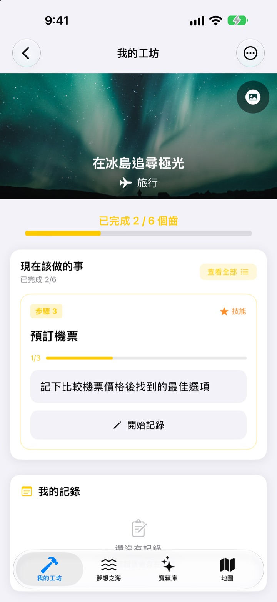
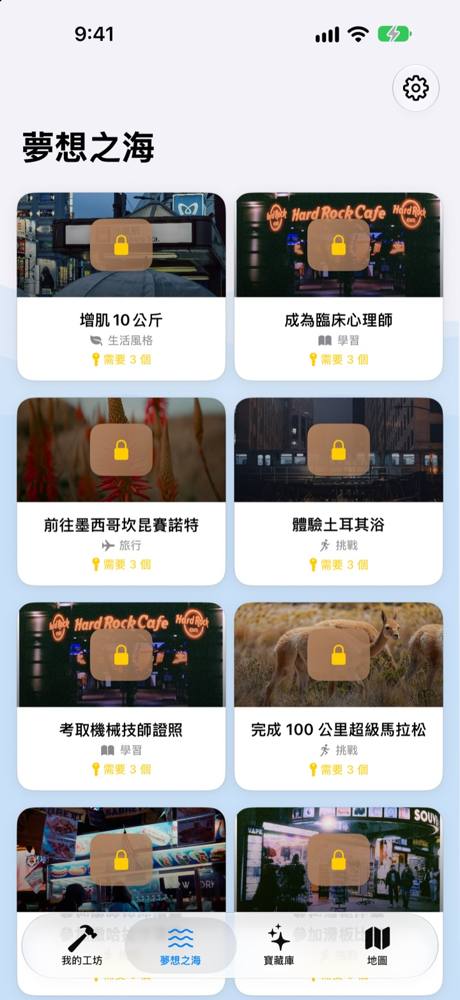
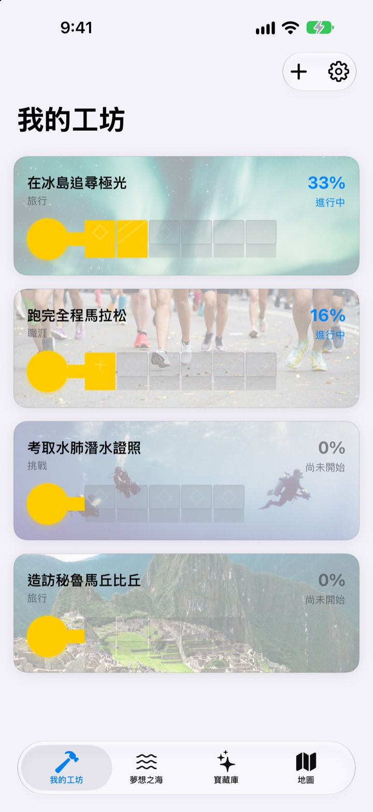
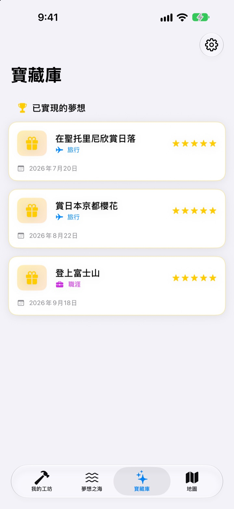

願望清單，
別只是寫下來
選一個夢想，實現它的一個個小步驟會變成鑰匙上的齒。每天回答一步，不知不覺間，夢想寶箱就打開了。
一次購買就能使用所有功能，沒有訂閱，也沒有廣告。

親手完成這把鑰匙
冰島極光這個夢想只剩最後兩步。每個問題寫一句回答（空著也可以），再點「下一步」，齒就會補上；全部補齊後就能打開寶箱。
寫下的願望清單，後來就忘了？
「看極光」太大了，不知道從哪裡開始，於是在清單上一放就是好幾年。尋夢把這個夢想拆成今天就做得到的小步驟，像是查季節、存預算、訂機票，而且只讓你看現在要做的那一步。
從 590 多個夢想裡挑選
旅行、體驗、成就、健康、學習、人際關係。六大領域的夢想裝在箱子裡，漂浮在夢想之海上。把喜歡的箱子帶回我的工坊，實現它的步驟已經拆好了。
清單裡沒有的夢想，寫下標題、領域和步驟就能自己建立。

一次一個齒，今天做今天的
在我的工坊裡，每個夢想的鑰匙完成到哪裡一目了然。現在要做的步驟在最上面，回答準備好的問題，就能補上一個齒。
回答和照片都會存進我的記錄，還能在進度時間軸回顧一路走來的過程。

實現的夢想放進寶藏庫，想去的地方標在地圖上
補齊所有齒就能打開寶箱，實現的夢想會連同日期存進寶藏庫。暫停的夢想也放在那裡，隨時可以重新開始。
有地點的夢想會集中顯示在地圖上，想去的地方一眼就看得到。

三個步驟就能開始
- 1
選一個夢想
在夢想之海點一個箱子，再點「帶回我的工坊」。
- 2
回答今天這一步
一題一題回答最上面那一步的問題，就能補上一個齒。
- 3
打開寶箱
所有齒補齊後鑰匙就完成了，可以打開夢想寶箱。
夢想之海的六大領域
- 旅行
- 在冰島追尋極光 · 在聖托里尼欣賞日落
- 體驗
- 體驗跳傘 · 體驗飛行傘
- 成就
- 跑完全程馬拉松 · 健行聖母峰基地營
- 健康
- 做20下引體向上 · 練出腹肌
- 學習
- 流利使用英語 · 流利使用法語
- 人際
- 和爸媽一起環遊世界 · 和朋友在濟州島住一個月
每個領域都有將近一百個夢想。自己的夢想可以在我的工坊用「新增夢想」建立。
一次購買，全部擁有
App 本身
- 590 多個夢想和每一步的問題
- 建立自己的夢想
- 附照片的我的記錄和進度時間軸
- 寶藏庫和地圖
- 養夢模式
- 未來的更新
支持開發者（自由選擇）
- 覺得好用時，可以在設定裡送一點小費
- 小費不會解鎖任何功能，不送也能使用全部功能
每次單獨付款，不是訂閱。
App 內沒有需要另外付費的功能，不需要帳號，也沒有廣告。
常見問題
要怎麼開始？
在「夢想之海」分頁點一個喜歡的箱子，再點「帶回我的工坊」。在我的工坊回答目前步驟的問題，齒會一個個補上。全部補齊後就能打開寶箱。
可以新增自己的夢想嗎？
可以。在我的工坊點「新增夢想」，填寫夢想標題、領域和實現它的步驟就好。
要怎麼暫停或重新開始夢想？
在進行中夢想的選單裡點「放棄這個夢想」，它會移到寶藏庫的「暫停的夢想」。在那裡點「重新開始」就會回到我的工坊，也可以點「永久刪除」刪掉。
養夢模式是什麼？
這是用登山的方式管理夢想的畫面，可以在設定 > 顯示設定中開關。你可以像管理專案一樣，為每一步設定期限，並管理費用、時間等障礙。
照片顯示不出來。
部分夢想的背景照片要從網路下載，請確認已連上網路。沒有網路時會顯示預設圖片。
記錄可以移到新的 iPhone 嗎？
記錄不需要帳號也不會同步，只儲存在這台裝置上。用 iCloud 備份或電腦備份回復新的 iPhone 時，會和其他 App 的資料一起移過去。
App 裡有要另外付費的功能嗎？
沒有。下載 App 後就能使用所有功能。設定裡的小費只是想表達感謝時的自由選擇。
我的夢想和記錄會被傳到別的地方嗎？
不會。沒有帳號，也不使用廣告或分析工具。你寫下的夢想、記錄和照片只會儲存在這台裝置上。
要怎麼聯絡你們？
錯誤回報、功能建議或任何事都歡迎告訴我們。可以在 App 的設定點「傳送意見回饋」，或透過 Instagram 私訊（@lee25_ios）聯絡。
有疑問或遇到問題，請寄信到 leeo@kakao.com。